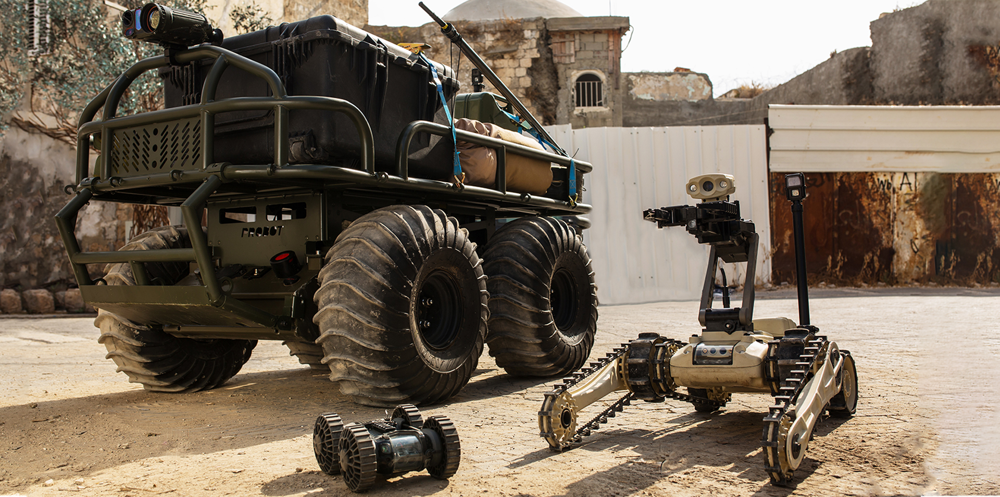
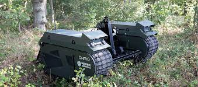

The idea that autonomous security robots could replace security guards has been considered for years. Identified as a cost saving business opportunity, this idea is now being implemented in some countries. Foreign militaries have long used autonomous defense robots to perform tasks that were physically impractical or dangerous. They were tasked with detonating bombs, deep sea diving, exploring toxic areas such as small pipes, walls, and volcanoes. These robots were called Unmanned Ground Vehicle.
Automated Security Robots (ASR) can be used to patrol, report, monitor, investigate and detect intruders, automatic license plate recognition, suspicious device detection, facial recognition and tracking. But these robots do not have the ability to detain or arrest suspects. Their physical presence will be important to prevent possible crimes.

Night patrolling is a boring experience for regular guards. A special advantage is that these robots can be used to perform tasks that are dangerous, boring and tiring for an average human. They can be applied to the security of institutions. Enlisting their help to prevent unauthorized persons from entering an organization will be very easy. While there is a risk of fooling a regular security guard into an institution, it would never be possible to fool an automated security robot into the institution.
A regular guard on patrol has to do it regularly. Constant monitoring and patrolling will prevent the possibility of trespassing and illegal activities. All areas have to be continuously and thoroughly monitored to ensure complete safety. But this would be a tedious and boring experience for the average defender. Inconvenience may also lead to missed patrols. This poses a risk of loss of security. The best solution to this is the use of automated security robots that do not detect a mask.

Data collection is done using automated robots without putting human lives at risk in cases of terrorism issues, where civilians are taken as hostages. Autonomous robots operate without human intervention. Although these robots are expensive, it is a long-term investment.